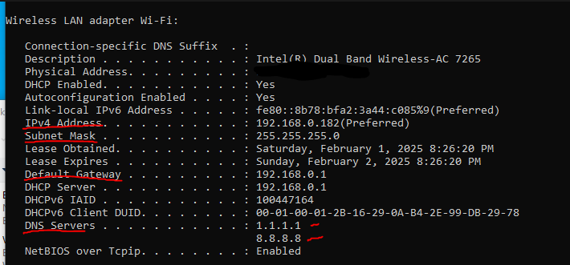
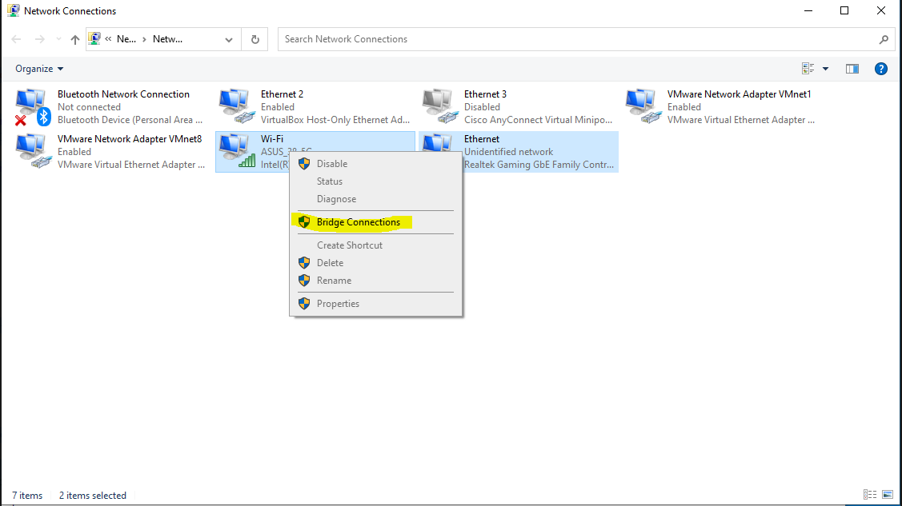
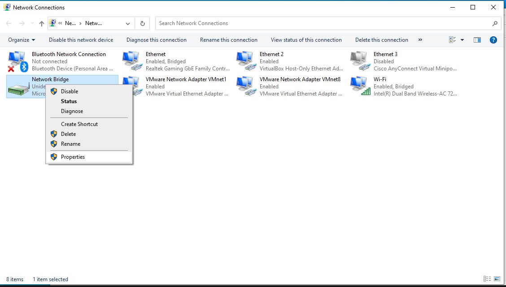
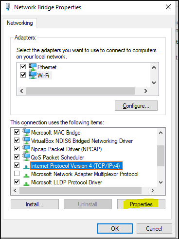
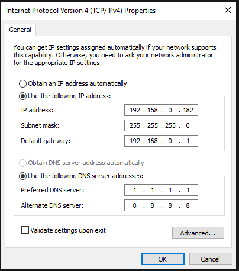
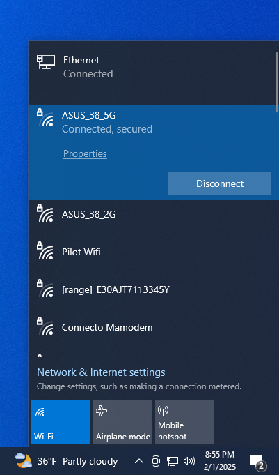
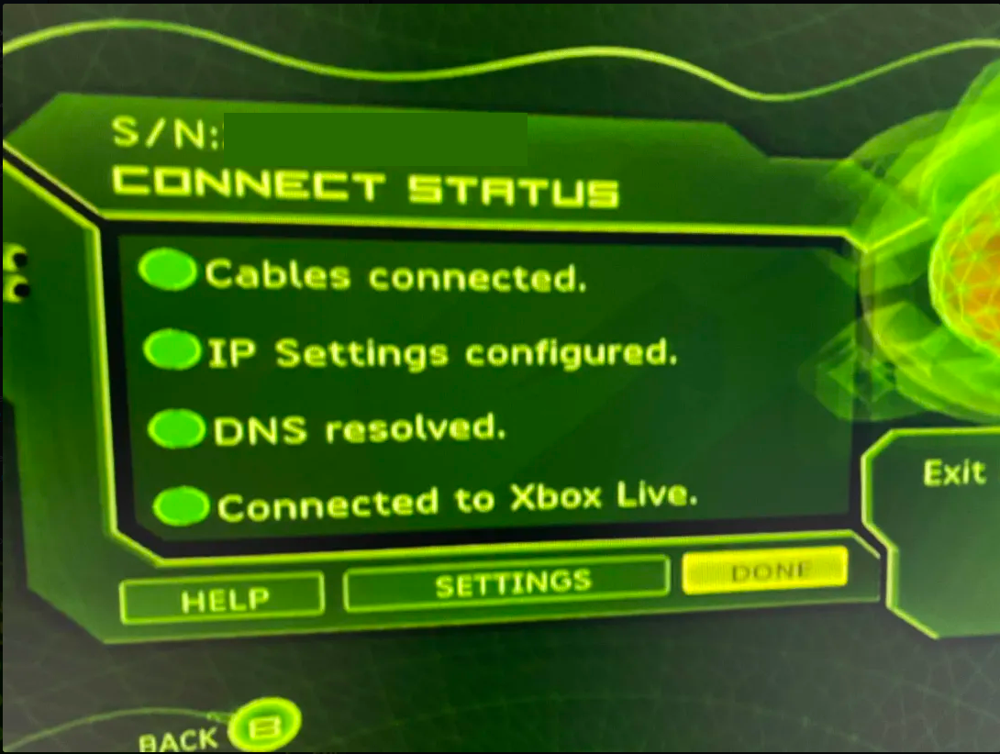

How to Create a Network Bridge Between Wi-Fi and LAN
Set up your Original Xbox with internet access by bridging your PC’s Wi-Fi connection to its Ethernet port.
Step 1: Find Your Wi-Fi IP Settings
Open Command Prompt and run the following command:
ipconfig /all
Locate your Wi-Fi adapter details and write down the following information: (You could also use any available IP in your network, but for simplicity this guide recommends copying the wifi IP)
- IPv4 Address
- Subnet Mask
- Default Gateway
- DNS Servers

Step 2: Create a Network Bridge
Follow these steps to create the network bridge:
- Open Control Panel and go to Network and Internet.
- Click on Network and Sharing Center.
- On the left, click Change adapter settings.
- Press Ctrl + Click to select both your Wi-Fi and Ethernet adapters.
- Right-click one of them and select Bridge Connections.

Step 3: Configure IP Settings for Network Bridge
Once the bridge is created:
- Right-click the Network Bridge and select Properties.

- Select Internet Protocol Version 4 (TCP/IPv4) and click Properties.

- Choose Use the following IP address and enter the details you wrote down earlier.
- Enter the same DNS server addresses as before.

- Click OK and close out.
Step 4: Restart and Test
Restart your PC. Once logged back in:
- Reconnect to your Wi-Fi.
- Check if your Ethernet shows a connected status.
- On your Xbox, run a network test.


Conclusion
Your Original Xbox should now have internet access via your PC's Wi-Fi. If you run into any issues, try disabling and re-enabling the bridge or re-entering the IP settings.